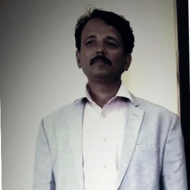

C‑level and board search for R&D and engineering companies.
Retained and confidential mandates for founders, promoters, MDs and country heads. One senior hire, done properly. Serving from Bangalore since 2010.

R&D and engineering leadership — the only rooms this firm works in.
Leadership built from the first hire, at Bangalore's greenfield engineering centres.
Phaniraj Bhatt led turnkey search during the start‑up phase of each of these R&D and engineering centres — before there was a team, an office, or a name to hire against.
- Textron GTC Greenfield start‑up phase
- Airbus Engineering Centre Greenfield start‑up phase
- Applied Materials Greenfield start‑up phase
- General Motors India Science Labs Greenfield start‑up phase
Two mandates, and what they cost the client.
-
ABB Corporate Research Centre
Bangalore · 2010ABB's research centre had been looking for a Global Head of Industrial Automation Software Services for more than a year. International search firms had been retained and paid. None had produced a candidate the client would make an offer to.
ABB Sweden was preparing to depute an expatriate into the role instead, at a cost of around ₹2 crore a year. SevenSeers was brought in at that point, and closed the mandate in one month on a single CV — at 65 LPA, less than half the budgeted cost.
- 1 monthBrief to close
- 1 CVCandidates submitted
- ₹65 LAgainst a ₹2 cr alternative
-
Bloom Energy India
Bangalore · 2011–12Bloom Energy's research centre was scaling in its early phase and hiring into genuinely scarce areas: solid oxide fuel cells, power electronics, SMPS design.
SevenSeers ran the niche mandates, including the Global Procurement and Supply Chain head — again closed on a single CV. More than ten people were placed across key functions during FY 2011–12. They are still with the company.
- 10+Placed in one financial year
- 1 CVTo close the procurement head
- Still thereRetention, to date
References for both mandates are available on request, in confidence.
SevenSeers closed a mandate in one month that two international firms could not close in a year. The quality of the single CV submitted was exceptional — we made the offer the same week.
Clients who will speak to the work.
Named referees at these organisations are available to prospective clients on request, in confidence.
Aptiv India Technical Centre
ABB
Enarka Instruments
Why not a large firm?
Large search firms operate on volume. A senior partner pitches to win your mandate, but the actual search and candidate assessment is handed down to junior researchers.
At SevenSeers, the person you brief is the person who maps the market, makes the approach, conducts the competency assessment, and negotiates the offer. You deal exclusively with the principal. That is how a mandate gets closed in one month on a single CV.
Four things, done narrowly.
No temp desks, no contract staffing, no volume hiring. Senior mandates only.
C‑level & board search
Retained search and contingent selection for R&D companies, pure‑science and engineering‑based. Group CEO, CFO, country head, VP operations, R&D director.
Retained · ConfidentialAssessment & competency reporting
Personality assessment and competency‑based reports as a formal deliverable, not an afterthought. Succession planning, compensation benchmarking, third‑party reference checks.
16PF Certified PractitionerGreenfield & turnkey build‑outs
Standing up an engineering or R&D centre from nothing: the leadership team first, then the technical bench beneath it. Including full EV start‑up teams in Bangalore, Pune and Ahmedabad.
Textron · Airbus · Applied Materials · GMStart‑up co‑founder search
Supporting technology start‑ups in finding co‑founders and principal partners on an equity‑sharing model — a different search, run with the same discretion.
Equity‑sharing modelAn engineer before a recruiter.

Phaniraj Bhatt founded SevenSeers Consulting in 2010. An engineer before a recruiter, he knows the difference between a plausible CV and someone who can actually run a development programme, a plant, or a P&L.
He qualified as a Mechanical Engineer from Bengaluru University in 1997 and spent six years inside major engineering and R&D companies — BEML, and CMTI / Timken — before moving into search. He then worked at ABC Consultants and Adecco in Bangalore, and was Centre Head for Stanton Chase International in Hyderabad.
He has been invited by The Times of India to speak on emerging trends in India's engineering services market. Mandates are run by him personally, from brief to offer — you deal with the principal, not an account manager.
- QualifiedMechanical Engineer, Bengaluru University, 1997
- IndustrySix years — BEML, CMTI / Timken
- SearchABC Consultants · Adecco · Stanton Chase International
- FoundedSevenSeers Consulting, 2010
- Assessment16PF Certified Practitioner
Five steps, and you speak to the same person at each.
-
Brief
A conversation about the role, the reporting line, and what the last person got wrong. Confidentiality terms agreed here.
-
Market map
The companies worth approaching, the people inside them, and an honest read on what the role will cost.
-
Approach
Direct, discreet contact with passive candidates. Your name is disclosed only when you agree it should be.
-
Assessment
A short list, each with a competency‑based report behind it. 16PF profiling where the role warrants it.
-
Offer & landing
Compensation benchmarking, reference checks, offer negotiation — and contact through the notice period, so the hire actually arrives.
Where the network is deepest.
- Aerospace
- Automotive & EV
- Semiconductor
- Medical Devices
- Power T&D
- Oil & Gas EPC
- Chemicals & Polymers
- Pharma & Life Sciences
- IT & Engineering Services
- Metals & Mining
- Real Estate & Infrastructure
- Intellectual Property recruitment
Functional depth runs from telematics and ADAS to CFD, structural and fracture mechanics, fuel cell technology, battery management and firmware, factory automation, and nanotechnology.
Observations from the market.
Perspectives on C-suite succession, engineering talent scarcity, and building greenfield R&D centres in India.
The ₹2 Crore Mistake: Why Indian R&D Centres Keep Getting the First Hire Wrong
When a greenfield centre struggles to find its founding leader, the default solution is often an expensive expat deputation. Here is why the local search usually fails, and how to fix it.
Read Article →Executive Search in the Age of Scarcity: The 3% Rule
Less than 3% of senior engineering leaders in India are actively looking for a new role. If your search strategy relies on inbound applications or job boards, you are only seeing the desperate, not the capable.
Read Article →Beyond the Plausible CV: Why We Use 16PF Profiling for C-Level Hires
A CV tells you what a candidate has done. A competency assessment tells you how they did it, and whether they can do it again in your specific corporate culture.
Read Article →Who the work has been for.
- Aptiv India Technical Centre formerly Delphi
- ABB Corporate Research Centre
- Bosch Global Software Technologies
- Hitachi Energy India
- Conduent R&D Centre formerly Xerox
- Bloom Energy India
- Enarka Instruments
Senior mandates are also delivered for clients who are not named here, including EV manufacturers in Bangalore, Pune and Ahmedabad.
Most senior mandates are confidential. That is normal.
If you are replacing an incumbent, restructuring quietly, or hiring ahead of an announcement, the search runs without public advertisement. Your identity is disclosed to candidates only when you agree it should be, and everything shared in a mandate — CVs, references, conversations — stays within it.
Candidates placed through SevenSeers are not approached again for other mandates, and clients are not sourced from while an engagement is live.
Roles open now.
Most searches are confidential and never appear here. These are the ones that can be listed.
-
Head of Engineering — precision manufacturing
Bangalore. Confidential client; plant and NPD leadership; reports to the MD.
Enquire in confidence → -
VP — Engineering Services delivery
Bangalore / hybrid. Global ER&D services firm; aerospace and industrial accounts.
Enquire in confidence →
Start with an email.
Describe the role in two or three lines. No forms, no calls until you want one.
SevenSeers Consulting · Bangalore, India+91 98454 03883